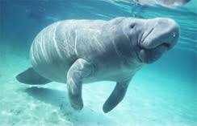

Manati
 En México, los manatíes (Trichechus manatus), también conocidos como "vacas marinas", habitan principalmente en el sureste del país, en ríos, estuarios y lagunas de Veracruz, Tabasco y Quintana Roo,
Amenazas
enfrentando amenazas como la pérdida de hábitat y la contaminación.